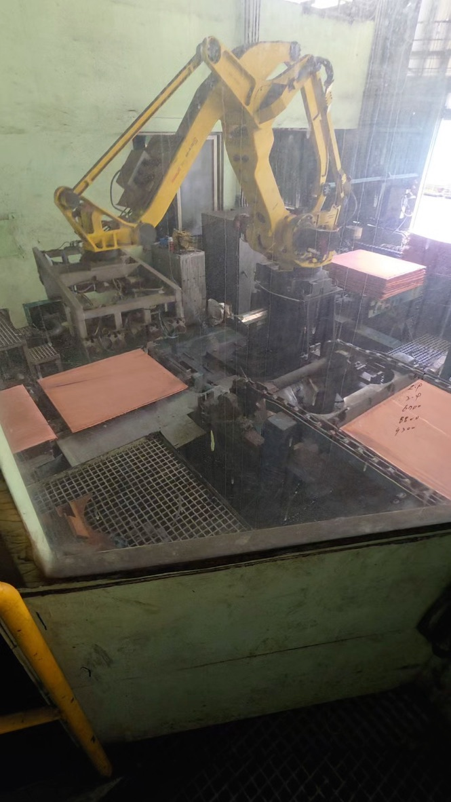

S/E/G는 SC#2 위에서 기다렸다가 내린다. R은 30번에서 이미 빠진다.
R급은 LOAD_OUT이 다시 판단하지 않는다. PLC가 픽업 전에 DI[103:Reject ENBL]을 켜 두고, RSR0001 30번이 REJECT를 부른다. LBL[11]에는 리젝트 콜을 넣지 않는다. 바꿀 것은 LBL[11]의 DI[4] 조건뿐이다. 대상은 CSM1(1호기)만이다. 저장소의 ROBOT_3/ 파일은 고치지 않는다.
R급은 어디서 갈리는가
LOAD_OUT에는 등급 분기가 없다. 오프셋 픽인지(R[55], R[56])만 보고 SC#2로 내린다. R을 여기서 다시 보면 안 된다.
R은 PLC가 먼저 정하고, 로봇은 픽업이 끝나는 그 패스에서 REJECT로 보낸다.
| 단계 | 누가 | 신호·프로그램 |
|---|---|---|
| 1 | PLC | Reject_Start_Cmd가 래치된다. 체인24 비전 R, 리젝트 카운터, 막대 끝 R 등이 들어간다. |
| 2 | PLC | 그립이 열려 있고 SC#1 Unload 허가가 있으면 permit_Reject_start가 선다. 그다음 o_Reject_Enable(로봇 DI[103])과 o_unload_infeed(DI[1])을 같이 켠다. |
| 3 | 로봇 | DI[1]로 ULOD_INF가 왼쪽 SC#1에서 집는다. 그립이 닫힌 채로 돌아온다. |
| 4 | 로봇 RSR0001 30번 | DI[103]이 켜져 있고 R[45]=0(펀치 아님)이면 CALL REJECT. 여기서 리젝트 컨베이어로 간다. |
| 5 | 로봇 REJECT | 놓고 그립을 연다. DO[102:REJECT END]를 펄스한다. LBL[11]과 LOAD_OUT은 타지 않는다. |
S/E/G는 30번에서 DI[103]이 꺼져 있어서 REJECT를 건너뛴다. 펀치가 아니면 바로 LBL[11]이다. LBL[11]은 “이미 집어서 SC#2에 놓을 장”만 기다린다.
22번은 그립이 닫혀 있으면 LBL[11]로 점프해서 30번을 다시 보지 않는다. 그래서 R은 픽업이 끝나는 그 순간에 DI[103]이 이미 켜져 있어야 한다. PLC가 Unload와 Reject ENBL을 같이 주므로, 지금 운전은 그렇게 맞춰져 있다. LBL[11]에 REJECT를 한 번 더 넣을 필요는 없다.
R[141] 스위치
| 값 | 동작 |
|---|---|
R[141]=0 | 지금과 같다. 체인24 위에서 DI[4]를 기다린 다음 LOAD_OUT이 시작된다. |
R[141]=1 | LBL[11]이 DI[4]를 기다리지 않고 LOAD_OUT을 부른다. 대기는 LOAD_OUT 안, 오른쪽 SC#2 위다. R은 30번이 그대로 REJECT한다. |
기존 줄을 지워서 !만 남기면, 스위치를 0으로 되돌려도 예전 동작이 없다. 기존 지시는 실행 가능한 채로 두고, R[141]=0일 때만 타게 한다. 그 앞에 리마크 ! R[141]=0 기존만 넣는다.
R[141]은 INIT에서 0으로 만들지 않는다. 전원을 넣어도 값이 남는다. 처음 시험 전에 레지스터가 0인지 확인하고, 변경을 켤 때만 1로 둔다. 코멘트는 WAIT AT SC2로 적는다.
고칠 프로그램
| 프로그램 | 기존 | R[141]=1일 때 |
|---|---|---|
RSR0001 |
LBL[11] 44번: DI[4]가 켜져야 LOAD_OUT. 30번 REJECT는 그대로. |
44번만 R[141]=1 OR DI[4]로 바꾼다. 30번에 리젝트 콜을 추가하지 않는다. |
LOAD_OUT |
시작하자마자 DO[4]를 끄고, J PR[4] CNT100 다음 L PR[5]로 내린다. |
DO[4]는 켠 채로 J PR[4] FINE까지 간다. WAIT DI[4] 다음에 DO[4]를 끄고 L PR[5]로 내린다. |
DROPNORM |
펀치 뒤 오프셋 드롭. J PR[15] CNT50 다음 L PR[18]. |
같은 핸드셰이크. J PR[15] FINE에서 WAIT DI[4], 그다음 DO[4] OFF, L PR[18]. |
DROP_REV |
그립 180도 픽 뒤 드롭. J PR[16] FINE 다음 L PR[19]. |
같은 대기. 지금 CALCULT가 X=167, Y=883으로 고정되어 있어서 이 경로는 타지 않는다. 그래도 같은 스위치를 넣는다. |
ULOD_INF, OFSTZERO, PUNCH, REJECT, INIT는 건드리지 않는다. CSM2도 건드리지 않는다.
DO[4:Clear of Outfeed]를 LOAD_OUT 시작에서 끄면 안 된다. PLC는 이 비트가 켜져 있어야 SC#2를 돌리고, 완료 뒤에 DI[4]를 준다. 대기 중에 끄면 WAIT DI[4]가 끝나지 않는다. 끄는 시점은 DI[4]를 확인한 다음, 수직 하강 직전이다.
현장 배치. 왼쪽 SC#1, 오른쪽 SC#2
유리창에서 본 모습이다. 왼쪽 체인이 SC#1, 오른쪽 체인이 SC#2다. 노란 로봇이 둘 사이에 있다. TOOL은 전기동을 집는 그립이다. 로봇 왼쪽의 회색 프레임이 펀치(샘플) 쪽이다.

지금 S/E/G는 왼쪽 SC#1 체인24에서 잡고 올라간 뒤, 그 왼쪽 위에서 DI[4]를 기다린다. 바꾸면 전기동을 든 채로 오른쪽 SC#2 위 PR[4]까지 먼저 가고, SC#2가 끝난 뒤에만 수직으로 내린다. R은 오른쪽 SC#2로 가지 않고 리젝트로 보낸다.
파일에 있는 XYZ (UF0, mm)
| 점 | X | Y | Z |
|---|---|---|---|
| OFSTZERO APPR | -7 | -2344 | -466 |
| OFSTZERO DEPART | -7 | -2344 | -300 |
| OFSTZERO CLEAR | -7 | -2344 | 255 |
| OFSTNORM APPR | -15 | -2537 | -500 |
| OFSTNORM DEPART | -15 | -2537 | -670 |
| OFSTNORM CLEAR | -15 | -2537 | 250 |
| PUNCH APPR | 1624 | 842 | 100 |
| REJECT POUNCE.03 | -10 | 1700 | 351 |
사진으로 맞춘 결론
로봇은 SC#1과 SC#2 사이에 있다. 왼쪽 SC#1 체인24에서 집고, 오른쪽 SC#2에 내려놓는다. 펀치는 로봇과 SC#1 사이 회색 프레임이다.
기본 하강은 오른쪽 SC#2 위 J PR[4] 다음, 그 자리에서 L PR[5]로 Z가 내려간다. 지금 CNT100이라 서지 않으니, 대기하려면 FINE이 필요하다.
펀치 샘플은 왼쪽에서 집고 펀치를 거친 뒤, 역시 오른쪽 SC#2로 간다. 그때 Z 하강은 PR[4]가 아니라 PR[15]에서 시작한다. 펜던트에서 R[55]가 0이면 PR[4]만, 1이면 DROPNORM의 PR[15]도 고친다.
1. RSR0001
30번 REJECT는 그대로 둔다. LBL[11]에 리젝트 콜을 넣지 않는다. 고칠 줄은 44번 하나다. R[141]=1이면 DI[4]를 기다리지 않고 LOAD_OUT을 부른다.
기존 44번
IF DI[4:Load Outfeed]=ON,CALL LOAD_OUT ;
수정
! IF DI[4:Load Outfeed]=ON,CALL LOAD_OUT ; IF R[141:WAIT AT SC2]=1 OR DI[4:Load Outfeed]=ON,CALL LOAD_OUT ;
30번·46번은 손대지 않는다. R은 픽업 직후 30번에서 빠지고, S/E/G만 LBL[11]으로 와서 LOAD_OUT을 탄다.
2. LOAD_OUT
12번 DO[4]=OFF 앞에 분기를 넣는다. R[141]=1이면 기존 12번부터 LBL[1] 하강은 타지 않고, 파일 끝에 붙인 LBL[20]으로 간다. 기존 줄은 지우지 않는다.
기존 (12번 근처와 LBL[1])
DO[4:Clear of Outfeed]=OFF ;
IF R[55:OFFSET PICK]=0 AND R[56:REVERSE PICK]=0,JMP LBL[1] ;
IF R[55:OFFSET PICK]=1,CALL DROPNORM ;
...
LBL[1] ;
J PR[4:Outfeed Perch] 70% CNT100 ;
L PR[5:Outfeed Drop] 2300mm/sec CNT10 TB .50sec,CALL RETRACT ACC100 ;
추가
! 12번 앞에 삽입 IF R[141:WAIT AT SC2]=1,JMP LBL[20] ; ! 아래는 기존 그대로 (R[141]=0) ! 프로그램 끝에 추가 LBL[20] ; IF R[55:OFFSET PICK]=0 AND R[56:REVERSE PICK]=0,JMP LBL[21] ; IF R[55:OFFSET PICK]=1,CALL DROPNORM ; IF DO[7:Gripper Open]=ON,JMP LBL[29] ; IF R[56:REVERSE PICK]=1,CALL DROP_REV ; JMP LBL[29] ; LBL[21] ; J PR[4:Outfeed Perch] 70% FINE ; WAIT DI[4:Load Outfeed]=ON ; DO[4:Clear of Outfeed]=OFF ; L PR[5:Outfeed Drop] 2300mm/sec CNT10 TB .50sec,CALL RETRACT ACC100 ; COL DETECT OFF ; CALL OPENDROP ; COL DETECT ON ; PAYLOAD[1:Empty] ; L PR[4:Outfeed Perch] 2000mm/sec CNT75 ACC100 ; DO[8:Gripper Closed]=OFF ; DO[7:Gripper Open]=ON ; DO[4:Clear of Outfeed]=ON ; J PR[2:Infeed Perch] 80% CNT100 ACC100 ; LBL[29] ; TIMER[1]=STOP ; R[181:T1 LOAD]=TIMER[1] ;
PR[4]를 FINE으로 바꾸는 것이 이 수정의 핵심이다. CNT100이면 그 점에서 서지 않고 PR[5] 쪽으로 이어진다.
3. DROPNORM (펀치 샘플)
첫 줄에 분기를 넣고, 기존 9~20번은 그대로 둔다. 변경 경로는 파일 끝에 붙인다.
기존
J PR[15:Ofset Norm Perch] 50% CNT50 ;
L PR[18:Ofst Norm Drop] 1500mm/sec FINE TB .10sec,CALL RETRACT ;
추가
! 맨 앞 IF R[141:WAIT AT SC2]=1,JMP LBL[1] ; ! 아래 기존 그대로 ! 끝에 추가 LBL[1] ; J PR[15:Ofset Norm Perch] 50% FINE ; WAIT DI[4:Load Outfeed]=ON ; DO[4:Clear of Outfeed]=OFF ; L PR[18:Ofst Norm Drop] 1500mm/sec FINE TB .10sec,CALL RETRACT ; COL DETECT OFF ; CALL OPEN ; COL DETECT ON ; WAIT .50(sec) ; PAYLOAD[1:Empty] ; L PR[15:Ofset Norm Perch] 1500mm/sec CNT100 ; DO[4:Clear of Outfeed]=ON ; J PR[2:Infeed Perch] 100% CNT25 ACC150 ; END ;
4. DROP_REV
지금 샘플 계산은 이 프로그램을 부르지 않는다. 스위치를 같이 넣어 두면, 나중에 랜덤 오프셋이 다시 들어와도 하강 대기가 빠지지 않는다. PR[16]은 원래 FINE이다.
기존
J PR[16:Ofst Rev Perch] 50% FINE ;
L PR[19:Ofst Rev Drop] 1500mm/sec FINE TB 1.00sec,CALL RETRACT ;
추가
IF R[141:WAIT AT SC2]=1,JMP LBL[1] ; LBL[1] ; J PR[16:Ofst Rev Perch] 50% FINE ; WAIT DI[4:Load Outfeed]=ON ; DO[4:Clear of Outfeed]=OFF ; L PR[19:Ofst Rev Drop] 1500mm/sec FINE TB 1.00sec,CALL RETRACT ; COL DETECT OFF ; CALL OPEN ; COL DETECT ON ; PAYLOAD[1:Empty] ; L PR[16:Ofst Rev Perch] 1500mm/sec CNT100 ; DO[4:Clear of Outfeed]=ON ; J PR[2:Infeed Perch] 100% CNT10 ACC150 ;
펜던트에서 확인
| 순서 | 할 일 |
|---|---|
| 1 | DATA에서 R[141] 코멘트를 WAIT AT SC2로 두고 값은 0인지 본다. |
| 2 | RSR0001은 44번만 바꾼다. 30번 REJECT는 그대로 둔다. LOAD_OUT과 DROPNORM에 대기를 넣는다. |
| 3 | R[141]=1로 두고, S/E/G 한 장이 왼쪽에서 올라온 뒤 오른쪽으로 가서 PR[4]에서 서는지를 저속으로 본다. |
| 4 | 그 자리에서 DO[4]가 아직 ON인지, SC#2가 끝난 뒤에 DI[4]가 들어오고 그다음에 DO[4]가 꺼지는지 본다. |
| 5 | R 한 장은 체인24에서 REJECT로 가는지 본다. SC#2 퍼치에서 기다리면 안 된다. |
| 6 | 샘플이 있으면 R[55]를 본다. 1이면 PR[15]에서 서는지 확인한다. |
| 7 | 문제가 있으면 R[141]=0으로 되돌린다. |